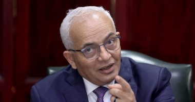

تدريس اللغة الثانية بالمدارس الحكومية الإعدادية من العام الدراسى 2025
أكدت وزارة التربية والتعليم والتعليم الفنى، تدريس اللغة الأجنبية الثانية بالمدارس الحكومية بالمرحلة الإعدادية بداية من العام الدراسى 2024,2025، وتشمل اللغة الفرنسية والإيطالية والإسبانية والألمانية، موضحة أن تدريس اللغة الثانية بالصفوف الدراسية بنظام التعليم الجديد بالمرحلة الإعدادية.
كان الدكتور رضا حجازى، وزير التربية والتعليم والتعليم الفنى، استقبا ميشيل كوارونى، سفير دولة إيطاليا بالقاهرة
وتم الاتفاق على توقيع مذكرة تفاهم لتدريس اللغة الإيطالية كلغة اختيارية في إطار اللغات الأجنبية الثانية التي سيتم تدريسها بداية من الصف الأول الاعدادي في المدارس الحكومية للعام الدراسي 2024,2025.
وأوضحت الوزارة: يأتي ذلك في إطار خطة تطوير مناهج المرحلة الاعدادية التي ستتضمن إضافة اللغة الأجنبية الثانية للمواد الدراسية في المدارس الحكومية على أن يتم الاختيار بين عدة لغات من بينها اللغة الفرنسية واللغة الألمانية والإيطالية.
وأكدت الوزارة أن تدريس اللغة الثانية يأتى فى إطار تطوير مناهج المرحلة الإعدادية، كما أن تدريس اللغة الثانية سيكون مادة أساسية نجاح ورسوب، و تدريس اللغة الثانية يأتى فى إطار تطوير وسائل التعليم وتغيير المناهج وطرق الامتحانات والسعي المستمر نحو تطوير اللغات الأجنبية داخل المدارس وغيرها من الاصلاحات الهامة.
وأشارت إلى أن تطوير اللغة الفرنسية التي يتم تدريسها داخل المدارس للارتقاء بمستوى الطلاب فى اللغة، موضحة أن وزارة التربية والتعليم والتعليم الفني تضع حاليا الإطار العام لمناهج المرحلة الاعدادية في إطار خطة استكمال تطوير المنظومة التعليمية.